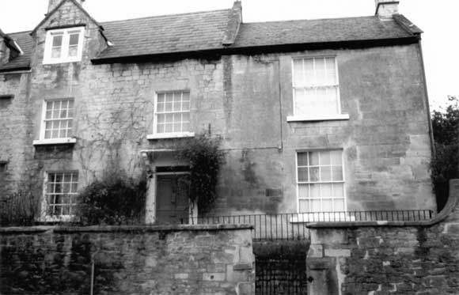
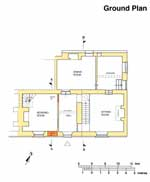

Type of building:
End of terrace house
Listing:
Grade ll
Plan and elevation:
Single pile, two-units. 2 1/2 storeys. Plus two two-storey extensions.
Summary of the probable main building
history:
About 1660-1665. Extended to the east about 1765-1770. Extended to the rear about
1815-1835.

South elevation
Exterior:
One of a pair with its neighbour (BE 010) the building has been subject to substantial
modifications. The facade walling consists of coursed and squared locally quarried
Bath stone. The eastern extension being bonded in but of slightly larger stone
blocks. The original building is gabled and houses a two-light mullion window
of ogee-chamfer section with a drip label over and with indications that it once
contained an iron casement. There is a blocked front entry in this part of the
building to the west of the present entry. The present entry has an over light
and a flat stone hood supported on scrolled ogee moulded stone brackets. The lines
of former continuous labels over the ground floor and first floor windows are
evident although now in-filled. All other windows are eight over eight sashes
and misaligned. The gable end of the eastern extension is of ashlar construction.
The northern extension under a cat-slide roof is straight jointed to this gable
end and is of roughly dressed and coursed Bath stone construction with ashlar
quoins. The side of this extension contains an entry with an iron barred first
floor casement window; the iron bars on the ground floor window having been removed
and the window opening widened. All roofs are slate clad although the original
house roof slope (about 52%) suggests an original stone roof (borne out by the
evidence of stone-tile fragments found in the loft space). The roof slope of the
eastern extension is of a lower pitch (about 40%) but the roof, supported by two
substantial king posts, was also probably stone-tiled when built. There is evidence
of a former higher roof line but no apparent difference in roof angle. The same
applies to the cat slide roof on the northern extension. The raised verges are
protected with coping stones. The original house and the eastern extension have
ashlar stone chimney stacks of similar design but different scales. The walls
are generally 55cm thick although the end gable wall of the eastern extension
is between 30-35cm.
Interior:
Taken in three sections:
1) The original house. Described in a deed of 1721 as "One lower room called the Hall, One chamber over the Hall, One little room adjoining the north side of the Hall, One other little room called the Shop, One chamber rangeing over the little room and the Shop". This plan still clearly evident. The Hall contains the original entry (now blocked), stone flagged floor, stone skirting, a chamfered stone fire surround set in a wide chimney breast, a blocked interior door (leading to the "little room") and an elm semi-circular staircase to the upper floors (the newel post continues to the attic level where it has been at some time crudely cut short of the ceiling). The staircase is situated in one of the alcoves of the fireplace. The present entrance hall (the "Shop" and the "little room") appears to have been two rooms at one time with evidence of a former partition which also divides the different flooring stone of the room - Bath stone and pennants respectively. This room contains the present principal entry and what appears to be a former rear entry protected by a wide five-board tongued and grooved door with iron door furniture (the door looks to be early 19th Century). Here the "outside" stone door frame is chamfered. The first floor consists of the present study, bathroom and passage - the last two being one of the original chambers subdivided by stud walling. Both chambers were originally interconnected. The study possesses an internal two-light mullion window of ogee-chamfer section which originally overlooked the rear of the property. This window consists of two fixed leaded lights fastened to oak stanchions. The fastenings are lead strips for one light (with 18 rectangular panes) and wire for the other (with 15 rectangular panes). The stanchions are set vertically in a diamond pattern, the glass panes are thin, air blown and discoloured by iron oxide. The window was once protected by wooden shutters. The study contains a four-board tongue and groove door and a two-panel cupboard door both bearing hand wrought iron door furniture and nails. The fire surround is chamfered stone containing a "Pantheon" pattern cast iron hob grate, which appears to be a later insertion of 18th Century date. The study continues the semi-circular staircase to the attic rooms above. These two rooms are floored with much repaired elm boards of varying widths (31cm maximum). The walls of both rooms are taken up into the roof space. The first and larger room is inside the gable overlooking the front of the building with a mullioned window of ogee-chamfer section. There is a chamfered stone fire surround containing another "Pantheon" cast iron hob grate, which again looks like a later 18th Century insertion. The second attic room contains a mullioned window, of ogee-chamfer section, which is in the original gable end of the old house but which now looks into the roof space of the eastern extension. The "exterior" of this window has a straight drip label. The dormer window overlooking the rear is a modern replacement for (on the evidence of BE 010) an earlier stone gabled mullion window. The roof is single bay - the timbers consist of simple rafters (no principals), substantial purlins trenched into collars and a ridge piece supported by a yoke at the party wall end. The gable window is formed around extended collars in the 17th Century Cotswold style.
2) The eastern extension. Consist of two rooms - at ground floor and first floor level respectively. Both rooms are more "formal" than the earlier building with higher ceilings and one common wall consisting of pine panelling stretching the full height of both rooms, six-panelled doors with brass door furniture, chamfer stone fire surrounds, step-in window bays housing eight over eight sashes with folding wooden shutters and moulded wood surrounds throughout and pine boarded floors. The ground floor room has plaster coving, a plaster central ceiling rose and glazed alcove cupboard doors. The first floor room fire opening contains an inserted "Rumford" cast iron grate of about 1815-1830. The wall panelling also supports the property's second staircase (straight) with at its head a sash window which at one time overlooked the rear of the house but now looks into the northern extension - an external window sill is present in the latter. The roof consists of twin oak king posts with scarf joints at the union of principal rafters and tie beams (all joints wood pegged) and with the purlins tusk jointed into the principals; second half of the 18th Century method of roof construction.
3) The northern extension. The most recent part of the property, now the present kitchen (K), dining room (D), workroom (W) and shower room (S). D retains a stone fire surround set in a wide chimney breast (the former single chimney stack being removed and roofed over in the 1970s). D with W over was formerly one tall room lit only by a skylight (extant) and containing a wooden staircase (since removed). In the 1970s the room was horizontally divided, the two rear window openings and the two door openings in W were inserted and the Bath stone slab flooring in D replaced with quarry tiles. In the course of inserting the window in D a stone-ware bottle (a witch bottle?) stylistically datable to 1815-1835 was recovered from the wall filling. D and K are separated by a seven-board tongue and groove door with early machine made iron strap hinges and screws.
Date & development:
The gabled facade of the original building, internal layout, mullion windows,
roof timbers and fixtures and fittings indicate a mid -17th Century construction
and accords with a 1721 deed, which traces title to 1665 and describes the property.
The eastern extension, from the evidence of room heights, windows, roof timbers
and fixtures, is of the fashion of the second half of the 18th Century. Presumably,
at the same time the original building was modified by the insertion of sash windows,
new entry, rebuilding of chimneys to fit new fireplace openings and by the removal
of the continuous labels to give a more "contemporary" look. Again this
accords with a deed of 1772, which talks of the enlarged premises as "Two
new built Messuages and Tenements and Dwelling Houses lately erected". The
northern extension is clearly post this date (from the evidence of the straight
joint) and pre 1840 (the Tithe Map shows the extension). The date 1815-1835 from
the evidence of the stone ware bottle looks right.
Ownership/Occupation:
The 1721 deed records the first known owner as William Cannings the Younger who
in 1665 conveyed the property to Samuel Hodson. William Cannings paid the Hearth
Tax in 1664 (Dwelly's Vol 1 p.160) and "Samuell Hudson" in 1674 (Dwelly's
Vol 2 p.223). The property seems to have connection with the woollen textile industry
- Samuel Hodson was a broadweaver, his son and heir James Hodson a clothworker
and William Batterbury (owner 1721) was first designated husbandman but, later,
broadweaver. (births or deaths of William Cannings, James Hodson, "Samuell
Hudson" and William Batterbury are recorded in the Parish Registers). It
is a reasonable surmise that the "One other little room called the Shop"
was connected with the textile trade and possibly also the attic rooms. A 1772
deed records that the building of the eastern extension and modifications to the
old house had been effected by William Batterbury's son-in-law, Edward Truman,
designated a yeoman of Bath, and at least from his time or that of his son, Samuel
Truman, a schoolmaster of Bath, the property had become an investment and was
tenanted. In 1783 ownership had passed to the Rev. Thomas Croome Wickes of London
and later Tetbury who was known to own other properties in the Bath area. The
1783 deed mentions two tenants - Mrs. Aust and Daniel Cottle for the now two houses
(see Dobbie p 92-93 and 113 for these persons). By the time of the 1840 Tithe
Apportionment the property was owned by Sarah Scudamore of what is now Prospect
House, Seven Acres Lane, and occupied by William Lynch - the house had reverted
to one residence. James Gerrish, designated yeoman but later a horse dealer, acquired
ownership in 1857; the property being described as one dwelling house with a garden
behind numbered 130 and 131 on the Tithe Map and occupied by Mrs. Sarah Neate.
References and bibliography:
- Deeds of the property in the possession of the owners
- Dwelly's National Records Vol 1 - Hearth Tax for Somerset 1664-1665 pub. E.
Dwelly MCMXVl
- Dwelly's National Records Vol 2 - Directory of Somerset Part l pub. E. Dwelly
MCMXXlX
- An English Rural Community, B.M. Willmot Dobbie, Bath Univ. Press 1969
- Batheaston Tithe Map and Apportionment Schedule 1840, Somerset Record Office
- Batheaston Parish Registers - Copy in Bath Central Library 929.3b
Reference picture
| Complete
late 17th century window |
Survey Drawings
|  |
|
|
| Ground Plan |
Sections |
|
| South Elevation |
Isometric projection of the roof
structure in the east extension. |